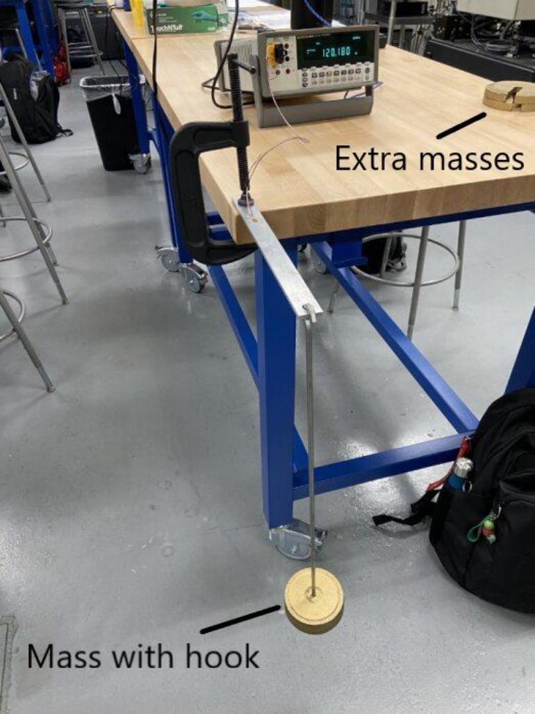
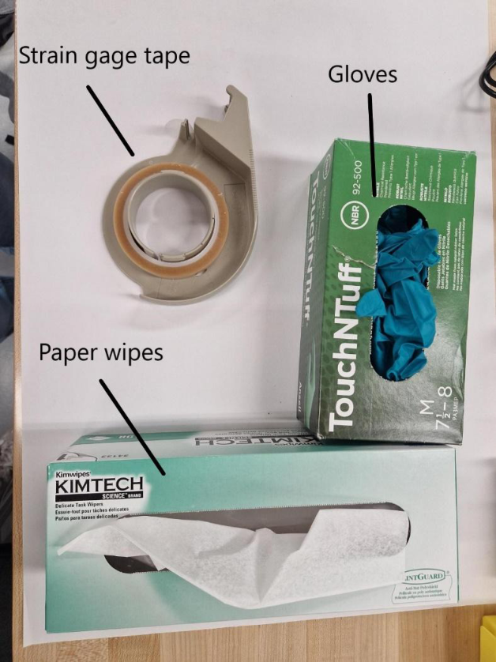

Experiment Overview
Strain gages are the workhorse sensor of structural testing. They appear on aircraft structural test articles, wind turbine blades, bridge load cells, and Formula 1 suspension components. Unlike extensometers, they can be bonded to any surface, measure highly localized strain, and operate in environments where no other sensor could reach. This lab covered the full installation process from raw surface preparation through data collection, developing practical skills that are directly applicable to structural health monitoring, load cell design, and experimental stress analysis.
- Install a 120 Ω foil strain gage on an Al 6061-T6511 beam following Vishay installation procedures
- Measure resistance changes under bending loads in both tension and compression orientations
- Derive Young’s modulus E for both the aluminum beam and a Nomex/CFRP honeycomb sandwich beam via Hooke’s law
- Compare computed modulus values against handbook data and assess sources of error

